전기기사 (2004-08-08 기출문제)
1과목: 전기자기학
1. 자기회로와 전기회로의 대응 관계가 잘못된 것은?
- 투자율-도전도
- 자속밀도-전속밀도
- 퍼미언스-콘덕턴스
- 기자력-기전력
(정답률: 48%)

2. 코일로 감겨진 자기회로에서 철심의 투자율을 μ라 하고 회로의 길이를 ℓ이라 할 때 그 회로의 일부에 미소공극 ℓg를 만들면 회로의 자기저항은 처음의 몇 배가 되는가? (단, ℓ g≪ℓ 즉, ℓ -ℓ g≒ℓ 이다.)
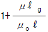
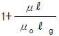
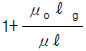
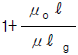
(정답률: 61%)
3. 진공 중에서 무한장 직선도체에 선전하밀도 ρL=2π×10-3 C/m가 균일하게 분포된 경우 직선도체에서 2m와 4m 떨어진 두 점사이의 전위차는 몇 V 인가?
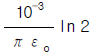
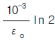
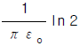
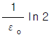
(정답률: 65%)
4. 플레밍(Flaming)의 왼손법칙을 나타내는 F - B - I 에서 F 는 무엇인가?
- 전동기 회전자의 도체의 운동방향을 나타낸다.
- 발전기 정류자의 도체의 운동방향을 나타낸다.
- 전동기 자극의 운동방향을 나타낸다.
- 발전기 전기자의 도체 운동방향을 나타낸다.
(정답률: 64%)
5. 그림과 같이 두께 ｄ, 내외반지름이 r1, r2 인 원환의 1/8 이 되는 부채꼴 모양의 반지름 방향에 대한 저항은? (단, 원환의 재료 도전률을 σ라고 한다.)
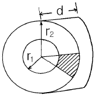
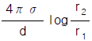
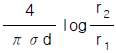
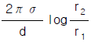
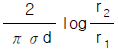
(정답률: 31%)
6. 그림과 같이 n개의 동일한 콘덴서 C를 직렬 접속하여 최하단의 한개와 병렬로 정전용량 Co의 정전전압계를 접속하였다. 이 정전전압계의 지시가 V일 때 측정전압 Vo는 몇 V 인가?
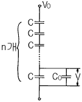
- nV
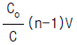
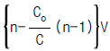
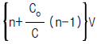
(정답률: 57%)
7. 공기 중에서 어느 거리를 두고 있는 두 점전하사이에 작용하는 힘이 1 N이고, 두 점전하를 액체 유전체속에 넣었더니 0.4 N으로 힘이 줄었다. 이 액체 유전체의 비유전률은 얼마인가?
- 0.1
- 0.4
- 2.5
- 6.25
(정답률: 62%)
8. 어떤 대전체가 진공 중에서 전속이 Q[C]이었다. 이 대전체를 비유전률 10 인 유전체속으로 가져갈 경우에 전속은 어떻게 되는가?
- Q
- 10Q
- Q/10
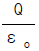
(정답률: 68%)
9. 그림과 같은 안반지름 7㎝, 바깥반지름 9㎝인 환상철심에 감긴 코일의 기자력이 500AT일 때, 이 환상철심 내단면의 중심부의 자계의 세기는 몇 AT/m 인가?
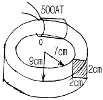
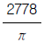
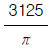
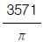
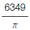
(정답률: 42%)
10. 패러데이법칙에서 회로와 쇄교하는 전자속수를 φ[Wb], 회로의 권회수를 N라 할 때 유도기전력 U 는 얼마인가?
- 2πμNφ
- 4πμNφ
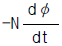
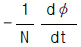
(정답률: 82%)
11. 서로 다른 두 유전체사이의 경계면에 전하분포가 없다면 경계면 양쪽에서의 전계 및 전속밀도는?
- 전계의 법선성분 및 전속밀도의 접선성분은 서로 같다.
- 전계의 접선성분 및 전속밀도의 법선성분은 서로 같다.
- 전계 및 전속밀도의 법선성분은 서로 같다.
- 전계 및 전속밀도의 접선성분은 서로 같다.
(정답률: 80%)
12. 막대자석 위쪽에 동축도체 원판을 놓고 회로의 한 끝은 원판의 주변에 접촉시켜 습동하도록 해 놓은 그림과 같은 파라데이 원판실험을 할 때 검류계에 전류가 흐르지 않는 경우는?
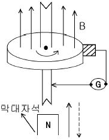
- 자석을 축 방향으로 전진시킨후 후퇴시킬 때
- 자석만을 일정한 방향으로 회전시킬 때
- 원판만을 일정한 방향으로 회전시킬 때
- 원판과 자석을 동시에 같은 방향, 같은 속도로 회전시킬 때
(정답률: 78%)
13. 자기유도계수 L을 구하는 식이 아닌 것은?
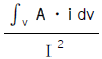
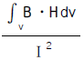
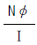
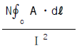
(정답률: 54%)
14. 전자의 비전하는 몇 C/kg 인가?
- -1.759×1011
- -2.759×1011
- -8.559×1011
- -9.559×1011
(정답률: 39%)
15. 1μA의 전류가 흐르고 있을 때, 1초동안 통과하는 전자수는 약 몇 개인가? (단, 전자 1개의 전하는 1.602×10-19 C 이다.)
- 6.24×1010
- 6.24×1011
- 6.24×1012
- 6.24×1013
(정답률: 68%)
16. E =(i +j 2+k 3)[V/cm]로 표시되는 전계가 있다. 0.01μC의 전하를 원점으로부터 i 3[m]로 움직이는데 필요한 일은 몇 Ｊ 인가?
- 3×10-8
- 3×10-7
- 3×10-6
- 3×10-5
(정답률: 38%)
17. 전위 V= 3xy+z+4 일 때 전계 E 는?
- i 3x+j 3y+k
- -i 3y-j 3x-k
- i 3x-j 3y-k
- i 3y+j 3x+k
(정답률: 64%)
18. 자유공간에 있어서 포인팅 벡터를 S [W/m2]라 할 때 전장의 세기의 실효값 Ee[V/m]를 구하면?
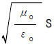
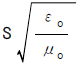
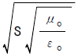
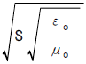
(정답률: 56%)
19. 다음 사항 중 옳은 것은?
- 지구 상공에는 대기가 전리되어 전자와 이온으로 구성된 전리층이 있는데 A층, B층, C층, D층, E층, F층 등이 있다.
- 지구상에서 전자파를 발사하면 파장이 긴 것일수록 전리층을 쉽게 벗어날 수가 있다.
- 장파는 주로 F층에서 반사되어 지구로 되돌아 온다.
- 송신 안테나에서 방사되는 전자파는 직접파, 대지 반사파, 산악 회절파, 전리층 반사파 등으로 수신 안테나에 이른다.
(정답률: 41%)
20. 내경이 2cm, 외경이 3cm인 동심 구 도체간에 고유저항이 1.884x102Ωm인 저항물질로 채워져 있는 경우, 내외구간의 합성저항은 약 몇 Ω이 되는가?
- 2.5
- 5
- 250
- 500
(정답률: 47%)
2과목: 전력공학
21. 송전선에 복도체를 사용할 경우, 같은 단면적의 단도체를 사용하였을 경우와 비교할 때 옳지 않은 것은?
- 전선의 인덕턴스는 감소되고 정전용량은 증가된다.
- 고유 송전용량이 증대되고 정태안정도가 증대된다.
- 전선 표면의 전위경도가 증가한다.
- 전선의 코로나 개시전압이 높아진다.
(정답률: 53%)
22. 용량 20kVA인 단상 주상변압기에 걸리는 하루의 부하가 20kW 14시간, 10kW 10시간일 때 하루동안의 손실은 몇 W 가 되는가? (단, 부하의 역률은 1로 가정하고, 변압기의 전부하동손은 300W, 철손은 100W이다.)
- 6850
- 7200
- 7350
- 7800
(정답률: 43%)
23. 전력용 피뢰기에서 직렬 갭(Gap)의 주된 사용 목적은?
- 방전내량을 크게 하고 장시간 사용하여도 열화를 적게 하기 위함이다.
- 충격방전개시전압을 높게 하기 위함이다.
- 상시는 누설전류를 방지하고 충격파 방전 종료후에는 속류를 즉시 차단하기 위함이다.
- 충격파가 침입할 때 대지에 흐르는 방전전류를 크게하여 제한전압을 낮게 하기 위함이다.
(정답률: 67%)
24. 송전선로에 사용되는 애자의 특성이 나빠지는 원인으로 볼 수 없는 것은?
- 애자 각 부분의 열팽창의 상이
- 전선 상호간의 유도장애
- 누설전류에 의한 편열
- 시멘트의 화학팽창 및 동결팽창
(정답률: 60%)
25. 3300V, △결선 비접지 배전선로에서 1선이 지락하면 전선로의 대지전압은 몇 V 까지 상승하는가?
- 4125
- 4950
- 5715
- 6600
(정답률: 65%)
26. 그림과 같이 정수가 서로 같은 평행 2회선 송전선로의 4단자 정수 중 B 에 해당되는 것은?
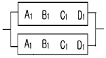
- 2B1
- 4B1
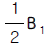
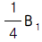
(정답률: 70%)
27. 송전계통의 안정도 향상책으로 적당하지 않은 것은?
- 직렬콘덴서로 선로의 리액턴스를 보상한다.
- 기기의 리액턴스를 감소한다.
- 발전기의 단락비를 작게 한다.
- 계통을 연계한다.
(정답률: 69%)
28. 송전전력, 선간전압, 부하역률, 전력손실 및 송전거리를 동일하게 하였을 경우 3상3선식과 단상2선식의 총 전선량(중량)비는 얼마인가?
- 0.75
- 0.87
- 0.94
- 1.15
(정답률: 58%)
29. 3상3선식 송전선에서 L을 작용인덕턴스라 하고 Lm 및 Le는 대지를 귀로로 하는 1선의 자기인덕턴스 및 상호인덕 턴스라고 할 때 이들 사이의 관계식은?
- L=Lm-Le
- L=Le-Lm
- L=Lm+Le
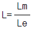
(정답률: 38%)
30. 수차의 특유속도를 나타내는 식은? (단, N: 정격회전수[rpm], H: 유효낙차[m], P: 유효낙차 H[m]일 경우의 최대출력[kW]이라고 함)
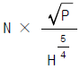
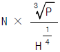
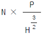
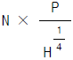
(정답률: 67%)
31. 송전선로에 있어서 장경간(long span)이라고 하는 것은 표준경간에 몇 m를 더한 경간을 넘는 것을 말하는가?
- 100
- 150
- 200
- 250
(정답률: 29%)
32. 발전기의 정상, 역상, 영상임피던스를 각각 Z 1, Z 2, Z o라 하고 A상의 무부하 기전력을 E a 라 할 때 A상 단자가 접지된 경우의 전류 Ｉ a 는?
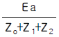
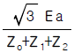
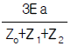
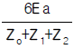
(정답률: 67%)
33. 콘덴서용 차단기의 정격전류는 콘덴서군 전류의 몇 % 이상의 것을 선정하는 것이 바람직한가?
- 120
- 130
- 140
- 150
(정답률: 32%)
34. 증기압, 증기온도 및 진공도가 일정하다면 추기할 때는 추기치 않을 때보다 단위 발전량당 증기소비량과 연료 소비량은 어떻게 변하는가?
- 증기소비량, 연료소비량 모두 감소한다.
- 증기소비량은 증가하고, 연료소비량은 감소한다.
- 증기소비량은 감소하고, 연료소비량은 증가한다.
- 증기소비량, 연료소비량 모두 증가한다.
(정답률: 59%)
35. 원자로의 주기란 무엇을 말하는 것인가?
- 원자로의 수명
- 원자로가 냉각정지상태에서 전출력을 내는데 까지의 시간
- 원자로가 임계에 도달하는 시간
- 중성자의 밀도(flux)가 읗= 2.718배 만큼 증가하는데 걸리는 시간
(정답률: 40%)
36. 100kVA 단상변압기 3대로 △결선하여 수용가에게 급전하던 중 변압기 1대가 고장이 발생하여 이를 제거하였다. 이 때 부하가 250kVA라면 나머지 두 대로 급전할 경우 변압기는 약 몇 % 의 과부하율로 운전되겠는가?
- 115
- 125
- 135
- 145
(정답률: 47%)
37. 1대의 주상변압기에 역률(늦음) cosθ1, 유효전력 P1[kW]의 부하와 역률(늦음) cosθ2, 유효전력 P2[kW]의 부하가 병렬로 접속되어 있을 경우 주상변압기에 걸리는 피상전력은 몇 kVA 인가?
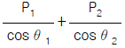
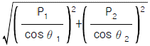
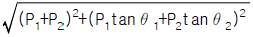
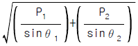
(정답률: 73%)
38. 최근 154kV급 변전소에 주로 설치되는 차단기의 종류는?
- 자기차단기(MBB)
- 유입차단기(OCB)
- 기중차단기(ACB)
- SF6가스차단기(GCB)
(정답률: 67%)
39. 단선 고장시의 이상전압이 최저인 접지방식은?
- 직접 접지식
- 비접지식
- 고저항 접지식
- 소호리액터 접지식
(정답률: 57%)
40. 단상 3선식에 사용되는 바란서(balancer)의 특성이 아닌것은?
- 여자 임피던스가 적다.
- 누설 임피던스가 적다.
- 권수비가 1:1 이다.
- 단권변압기이다.
(정답률: 32%)
3과목: 전기기기
41. 주상 변압기의 고압측에 몇 개의 탭을 내놓는 이유는?
- 예비 단자용으로
- 부하 전류를 조정하기 위하여
- 수전점의 전압을 조정하기 위하여
- 여자 전류를 조정하기 위하여
(정답률: 60%)
42. 단상 직권 정류자 전동기에서 보상 권선과 저항 도선의 작용을 설명한 것 중 옳지 않은 것은?
- 역률을 좋게 한다.
- 변압기의 기전력을 크게 한다.
- 전기자 반작용을 제거해 준다.
- 저항 도선은 변압기 기전력에 의한 단락 전류를 작게 한다.
(정답률: 57%)
43. 8극 900[rpm] 동기 발전기로 병렬운전하는 극수 6의 교류 발전기의 회전수는?
- 1400
- 1200
- 1000
- 900
(정답률: 74%)
44. 권선형유도전동기에서 2차측 저항을 3배로 하면 최대 토크는 어떻게 되는가?
- 3배가 된다.
- √3 배가 된다.
- 1/3 배가 된다.
- 변하지 않는다
(정답률: 75%)
45. 3상 유도기에서 출력의 변환식이 맞는 것은?
(정답률: 68%)
46. 단자전압 220[V], 부하전류 50[A] 인 분권 발전기의 유기 기전력은? (단, 여기서 전기자 저항은 0.2[Ω]이며 계자전류 및 전기자 반작용은 무시한다.)
- 210[V]
- 215[V]
- 225[V]
- 230[V]
(정답률: 65%)
47. 직권 발전기의 계자철심에 잔류자기가 없어도 발전을 할수 있는 발전기는?
- 타여자발전기
- 분권발전기
- 직권발전기
- 복권발전기
(정답률: 67%)
48. 계자권선이 전기자에 병렬로만 연결된 직류기는?
- 분권기
- 직권기
- 복권기
- 타여자기
(정답률: 69%)
49. 자동제어장치에 사용되는 서보 모터(servomotor)의 특징을 나타낸 것 중 옳지 않은 것은?
- 빈번한 시동, 정지, 역전 등의 가혹한 상태에 견디도록 견고하고 큰 돌입 전류에 견딜 것
- 직류 서보 모터에 비하여 교류 서보 모터의 시동 토크가 매우 크다.
- 시동 토크는 크나, 회전부의 관성 모먼트가 작고 전기적 시정수가 짧을 것
- 발생 토크는 입력 신호에 비례하고 그 비가 클 것
(정답률: 64%)
50. 변압비 10:1의 단상변압기 3대를 Y-△로 접속하여 2차측에 200[V], 75[kVA]의 3상 평형부하를 걸었을 때 1차측에 흐르는 전류는 몇 [A]인가?
- 3464
- 2000
- 12.5
- 13.5
(정답률: 48%)
51. 동기 발전기가 운전 중 갑자기 3상 단락을 일으켰을 때 그 순간 단락 전류를 제한하는 것은?
- 전기자 누설 리액턴스와 계자누설 리액턴스
- 전기자 반작용
- 동기 리액턴스
- 단락비
(정답률: 45%)
52. 정격 출력이 7.5[KW]의 3상 유도 전동기가 전부하 운전에서 2차 저항손이 300[W]이다. 슬립은 몇 [%]인가?
- 9.42
- 7.51
- 4.61
- 3.85
(정답률: 62%)
53. 50[Hz], 4극 20[HP]의 3상 유도전동기가 있다. 전부하시의 회전수가 1450[rpm]일 때 회전력[Kg.m]은 약 얼마인가? (단, 1[HP]는 736[W]로 한다)
- 6.85
- 7.85
- 9.85
- 10.85
(정답률: 57%)
54. 동기 발전기의 권선을 분포권으로 하면?
- 집중권에 비하여 합성 유도 기전력이 높아진다.
- 권선의 리액턴스가 커진다.
- 파형이 좋아진다.
- 난조를 방지한다.
(정답률: 63%)
55. 교류 전동기에서 브러시 이동으로 속도변화가 편리한 전동기는?
- 농형 전동기
- 시라게 전동기
- 동기 전동기
- 2중 농형 전동기
(정답률: 49%)
56. 동기발전기의 단자부근에서 단락사고가 발생했다. 이 때 단락전류는?
- 서서히 증가해서 일정한 전류가 됨
- 급격히 증가한 후 일정한 전류로 감소함
- 서서히 감소해서 일정전류가 됨
- 서서히 감소하다가 일정한 전류로 증가함
(정답률: 68%)
57. 직류기의 전기자 반작용에 관한 설명으로 옳지 않은 것은?
- 보상권선은 계자극면의 자속분포를 수정할 수 있다.
- 전기자 반작용을 보상하는 효과는 보상권선보다 보극이 유리하다.
- 고속기나 부하변화가 큰 직류기에는 보상권선이 적당하다.
- 보극은 바로 밑의 전기자 권선에 의한 기자력을 상쇄한다.
(정답률: 58%)
58. 고정자의 속도가 N1[rpm], 주파수는 f[㎐]이고 회전자의 속도가 N2[rpm], 슬립이 s 라면 회전자 도체에 유기되는 기전력의 주파수[㎐]는?
(정답률: 43%)
59. 10[KVA], 2000/100[V]변압기의 1차 환산 등가임피던스가 6 + j8[Ω]일 때 % 리액턴스 강하는?
- 1.5
- 2
- 5
- 10
(정답률: 60%)
60. 변압기에 사용되는 절연유에 요구되는 특성이 아닌 것은?
- 점도가 낮을 것
- 절연내력이 작을 것
- 인화점이 높을 것
- 변질하지 말 것
(정답률: 68%)
4과목: 회로이론 및 제어공학
61. 대칭 3상 전압 Va, Vb=a2Va, Vc=aVa 일 때 a 상을 기준으로 한 각 대칭분 Vo, V1, V2 은?
- 0, Va, 0
- a2Va, aVa, Va
(정답률: 34%)
62. 의 정상치 f(∞)는?
- 5
- 3
- 1
- 0
(정답률: 58%)
63. 비정현파 전류 i(t) = 56 sinωt + 25sin 2ωt +30sin(3ωt+30° )+40sin(4ωt+60° )로 주어질 때 왜형율(歪形率)은 어느 것으로 표시되는가?
- 약 1.414
- 약 1
- 약 0.8
- 약 0.5
(정답률: 56%)
64. 근궤적을 그리려 한다. G(S)H(S)= 에서 점근선의 교차점은 얼마인가?
- -6
- -4
- 6
- 4
(정답률: 73%)
65. 계단응답이 입력 신호와 같은 파형이고 시간만이 뒤졌을 때 이 계의 요소는?
- 미분요소
- 부동작 시간요소
- 1차 뒤진요소
- 2차 뒤진요소
(정답률: 40%)
66. R-L-C 직렬회로에 t = 0에서 교류전압 Vm sin(ωt+θ )를 가할때 이면?
- 비진동적
- 임계적
- 진동적
- 비감쇠 진동적
(정답률: 45%)
67. 그림에서 내부저항 r[Ω], 기전력 E[V] 의 전원의 단자 a, b 에, R1[Ω]의 저항을 접속한 경우와 R2[Ω]의 저항을 접속한 경우의 부하저항의 소비전력이 같았다. r 와 R1, R2 와의 사이에 어떤 관계가 있는가?
- r=R1R2
(정답률: 53%)
68. 그림과 같은 순저항 회로에서 대칭 3상 전압을 가할 때 각 선에 흐르는 전류가 같으려면 R 의 값은?
- 4[Ω]
- 8[Ω]
- 12[Ω]
- 16[Ω]
(정답률: 57%)
69. 다음 과도응답에 관한 설명 중 틀린 것은?
- OVER SHOOT는 응답 중에 생기는 입력과 출력사이의 최대 편차량을 말한다.
- 시간지연(Time delay)이란 응답이 최초로 희망 값의 10% 진행되는데 요하는 시간을 말한다.
- 상승시간(Rise time)이란 응답이 희망값의 10% 에서 90% 까지 도달하는데 요하는 시간을 말한다.
(정답률: 62%)
70. 근궤적의 출발점 및 도착점과 관계되는 G(s)H(s)의 요소는? (단, K ＞ 0 이다.)
- 영점, 분기점
- 극점, 영점
- 극점, 분기점
- 지지점, 극점
(정답률: 70%)
71. 전압비 107 의 이득[dB]은?
- 7
- 70
- 100
- 140
(정답률: 62%)
72. 근궤적 S평면의 jω축과 교차할 때 폐루프의 제어계는?
- 안정하다.
- 불안정하다.
- 임계상태이다.
- 알수 없다.
(정답률: 62%)
73. 궤환제어계에서 반드시 필요한 장치는?
- 구동장치
- 정확성을 높이는 장치
- 안정성을 증가시키는 장치
- 입력과 출력을 비교하는 장치
(정답률: 56%)
74. 전송선로에서 무손실일 때 L=96[mH], C=0.6[μF]이면 특성 임피던스는 몇 [Ω] 인가?
- 100
- 200
- 300
- 400
(정답률: 68%)
75. 그림과 같은 R-C 병렬회로에서 전원전압이 es(t)=3e-5t인 경우 이 회로의 임피던스는?
(정답률: 56%)
76. 회로에서의 전압비 전달함수 는?
(정답률: 51%)
77. 그림과 같은 4단자망의 영상 전달 정수 θ 는?
- 0.33
- 0.66
- 0.99
- 1.22
(정답률: 36%)
78. 그림의 신호흐름 선도에서 C/R 는?
(정답률: 70%)
79. 그림의 보안 계통에서 입력 변환기 K1에 대한 계통의 전달함수 T 의 감도는 얼마인가?
- -1
- 0
- 0.5
- 1
(정답률: 43%)
80. 상태방정식 = AX + BU 에서 일 때 고유값은?
- -1, -2
- 1, 2
- -2, -3
- 2, 3
(정답률: 54%)
5과목: 전기설비기술기준 및 판단기준
81. 고압용의 개폐기, 차단기, 피뢰기 기타 이와 유사한 기구로서 동작시에 아크가 생기는 것은 목재의 벽 또는 천정 기타의 가연성 물체로부터 몇 m이상 떼어 놓아야 하는가?
- 1
- 1.2
- 1.5
- 2
(정답률: 35%)
82. 점검할 수 있는 은폐장소로서 건조한 곳에 시설하는 애자 사용 노출공사에 의한 저압 옥내배선은 사용전압이 440V 이상인 경우에 전선과 조영재와의 이격거리는 최소 몇 cm 이상이어야 하는가?
- 2.5
- 3
- 4.5
- 5
(정답률: 38%)
83. 66kV 가공전선과 6kV 가공전선을 동일 지지물에 병가하는 경우에 특별고압 가공전선의 굵기는 몇 mm2 이상의 경동 연선을 사용하여야 하는가?
- 22
- 38
- 55
- 100
(정답률: 52%)
84. 교통신호등 시설을 다음과 같이 하였다. 옳지 않은 것은?
- 회로의 사용전압을 600V로 하였다.
- 교통신호등 회로의 인하선을 지표상 2.5m로 하였다.
- 교통신호등의 제어장치의 전원측에는 전용개폐기 및 과전류차단기를 각 극에 설치하였다.
- 교통신호등의 제어장치의 금속제 외함에는 제3종 접지공사를 하였다.
(정답률: 48%)
85. 전기설비기술기준에서 정한 용어의 정의가 옳지 않은 것은?
- 조상설비는 무효전력을 조정하는 전기기계기구를 말한다.
- 가공인입선은 가공전선로의 지지물로부터 다른 지지 물을 거치지 아니하고 수용장소의 붙임점에 이르는 가공전선을 말한다.
- 개폐소란 전력계통의 운용에 관한 지시를 하는 곳을 말한다.
- 관등회로는 방전등용 안정기로부터 방전관까지의 전로를 말한다.
(정답률: 50%)
86. 옥내에 시설하는 저압전선으로 나전선을 절대로 사용할 수 없는 경우는?
- 금속덕트공사에 의하여 시설하는 경우
- 버스덕트공사에 의하여 시설하는 경우
- 애자사용공사에 의하여 전개된 곳에 전기로용 전선을 시설하는 경우
- 유희용 전차에 전기를 공급하기 위하여 접촉전선을 사용하는 경우
(정답률: 45%)
87. 제2종특별고압보안공사의 기술기준으로 옳지 않은 것은?
- 특별고압 가공전선은 연선일 것
- 지지물로 사용하는 목주의 풍압하중에 대한 안전률은 2 이상일 것
- 지지물이 목주일 경우 그 경간은 150m 이하일 것
- 지지물이 A종철주라면 그 경간은 100m 이하일 것
(정답률: 29%)
88. 과전류차단기를 시설하여도 되는 경우는?
- 저항기ㆍ리액터 등을 사용하여 접지공사를 한 때에 과전류차단기의 동작에 의하여 그 접지선이 비접지 상태로 되지 않는 경우
- 접지공사의 접지선의 경우
- 다선식 전로의 중성선의 경우
- 전로의 일부에 접지공사를 한 저압가공선로의 접지측 전선의 경우
(정답률: 36%)
89. 발전기ㆍ변압기ㆍ조상기ㆍ계기용변성기ㆍ모선 또는 이를 지지하는 애자는 어떤 전류에 의하여 생기는 기계적 충격에 견디는 것이어야 하는가?
- 지상전류
- 유도전류
- 충전전류
- 단락전류
(정답률: 55%)
90. 강색차선과 대지사이의 절연저항은 사용전압에 대한 누설 전류가 궤도의 연장 1㎞마다 몇 ㎃ 를 넘지 않도록 유지하여야 하는가?
- 5
- 10
- 20
- 30
(정답률: 45%)
91. 시가지에 시설하는 154kV 가공전선로를 도로와 제1차 접근상태로 시설하는 경우, 전선과 도로와의 이격거리는 몇 m 이상인가?
- 4.4
- 4.8
- 5.2
- 5.6
(정답률: 32%)
92. 사용전압이 154000V의 특별고압 가공전선로를 시가지에 시설하는 경우 지표위 몇 m 이상에 시설하여야 하는가?
- 7
- 8
- 9.44
- 11.44
(정답률: 40%)
93. 가공 전선로에 사용하는 지지물의 강도계산에 적용하는 갑종풍압하중을 계산할 때 구성재의 수직 투영면적 1m2 에 대한 풍압의 기준이 잘못된 것은?
- 목주 : 60kg
- 원형 철주 : 60kg
- 철근콘크리트주 : 114kg
- 강관으로 구성된 철탑 : 128kg
(정답률: 49%)
94. 저압전로에서 그 전로에 지기가 생겼을 경우에 0.5초 이내에 자동적으로 전로를 차단하는 장치를 시설하는 경우에는 자동차단기의 정격감도전류가 100mA인 경우 제3종 접지공사의 접지저항값은 몇 Ω 이하로 하여야 하는가?
- 50
- 100
- 150
- 200
(정답률: 45%)
95. 전자개폐기의 조작회로 또는 초인벨, 경보벨 등에 접속하는 전로로서 최대사용전압이 몇 V 이하인 것으로 대지 전압이 300V 이하인 강전류 전기의 전송에 사용하는 전로와 변압기로 결합되는 것을 소세력회로라 하는가?
- 60
- 80
- 100
- 150
(정답률: 44%)
96. 고압가공전선이 케이블이고, 통신선은 첨가통신용 제1종 케이블인 경우, 통신선과 고압가공전선사이의 이격거리는 최소 몇 cm 로 할 수 있는가?
- 30
- 40
- 50
- 60
(정답률: 31%)
97. 특별고압 가공전선로를 시가지에서 B종 철주를 사용하여 시설하는 경우, 경간은 몇 m 이하이어야 하는가?
- 50
- 75
- 150
- 200
(정답률: 41%)
98. 중성선 다중접지식의 것으로 전로에 지기가 생겼을 때에 2초이내에 자동적으로 이를 전로로부터 차단하는 장치가 되어 있는 22.9kV 가공전선로를 상부 조영재의 위쪽에서 접근상태로 시설하는 경우, 가공전선과 건조물과의 최소 이격거리는 몇 m 인가? (단, 전선으로는 나전선을 사용한다고 한다.)
- 1.2
- 2
- 2.5
- 3
(정답률: 16%)
99. 옥내 저압배선을 가요전선관 공사에 의해 시공하고자 한다. 가요전선관에 설치할 전선을 단선을 사용한다면 그 지름은 최대 몇 mm 까지 사용할 수 있는가? (단, 전선은 알루미늄선이 아니라고 한다.)(관련 규정 개정전 문제로 여기서는 기존 정답인 4번을 누르면 정답 처리됩니다. 자세한 내용은 해설을 참고하세요.)
- 1.6
- 2.0
- 2.6
- 3.2
(정답률: 38%)
100. 22900/3300V의 변압기를 지상에 설치하는 경우 울타리ㆍ담 등과 고압 및 특별고압의 충전부분이 접근하는 경우에 울타리 담ㆍ등의 높이와 울타리ㆍ담 등으로부터 충전부분까지의 거리의 합계는 최소 몇 m 이상이어야 하는가?
- 3
- 4
- 5
- 6
(정답률: 40%)